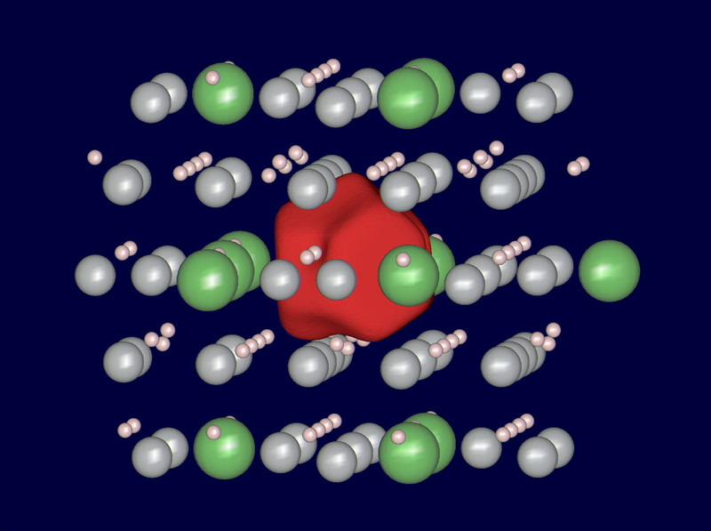
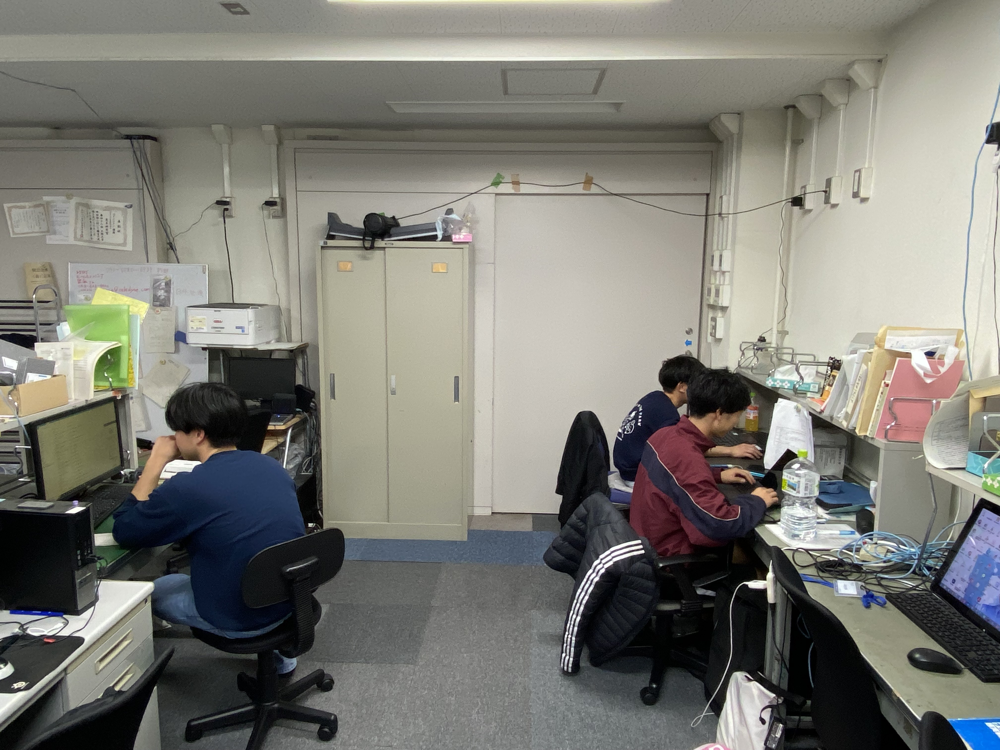

Osaka University — Graduate School of Engineering
Araki Laboratory
材料の謎を、原子の目で解き明かす。
陽電子と計算で切り拓く材料科学の最前線。
Unravel the mysteries of materials at the atomic scale.
Advancing materials science through positrons and computation.

荒木研究室について
材料の謎を、原子の目で解き明かす。
電子の反物質である陽電子（ポジトロン）を利用することにより、材料の内部構造を原子サイズオーダで観察することができます。自動車用アルミニウム合金や高強度鋼などの金属材料や、高エントロピー合金・金属３Ｄプリンターで作製した合金の特性発現機構を、陽電子を用いた実験および第一原理計算により解明し、新しい材料を設計するための研究を行っています。
View More研究室の活動

陽電子消滅法の基礎研究の観点から、ディープラーニングと、時代を先駆ける研究に挑んでいます。特に、世界のモデルのドット研究、大規模言語モデル、脳・AIに関する研究を積極的に進めています。

基礎研究の成果を発信のある学び・質の高い教育として多くの人に提供し、人・知識ひいては社会の変化に関わることを目的に講義の活動も積極的に進めています。

多種類の元素を均一に混合した高エントロピー合金の優れた特性発現機構を解明し、新しい材料設計の指針を提供します。

レーザー粉末床溶融結合法により造形された合金における格子欠陥を同定し、材料特性への影響を体系的に評価します。